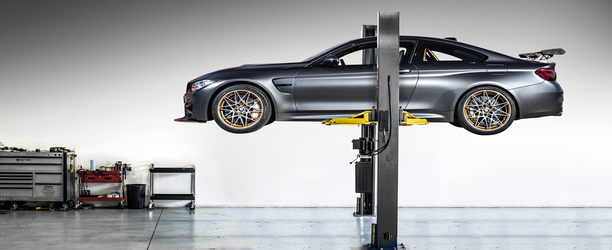

KONDICIONIERIŲ PILDYMAS TIK 4€/100g.
RATŲ MONTAVIMAS NUO 30EUR
Apie mus
Mūsų serviso kredo - darbą atlikti kokybiškai ir profesionaliai, kad klientas važiuotų komfortiškai ir saugiai. Mūsų autoservisuose dirba įvairias specializacijas turintys specialistai su skirtingomis kvalifikacijomis bei profesine patirtimi: automobilių elektrikai, automobilių mechanikai, automatikos bei fizikos specialistai.
Savo servise naudojame naujausią kompiuterinę įrangą, kuri padeda greitai ir tiksliai surasti gedimus bei juos pašalinti. Galime pasiūlyti ne tik automobilio remonto, bet ir įvairius, dalių restauravimo darbus. Rūpinkitės savo ir keleivių saugumu iš anksto. Profilaktiškai atlikite techninę automobilio apžiūrą bei galimo gedimo diagnostiką.
Mūsų specialistai pakonsultuos visais rūpimais klausimais bei atliks visus reikalingus automobilio remonto darbus.